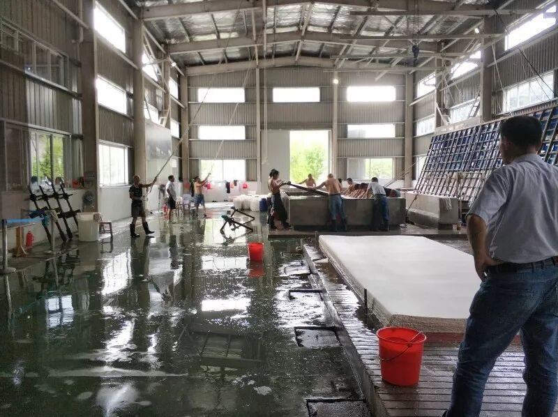
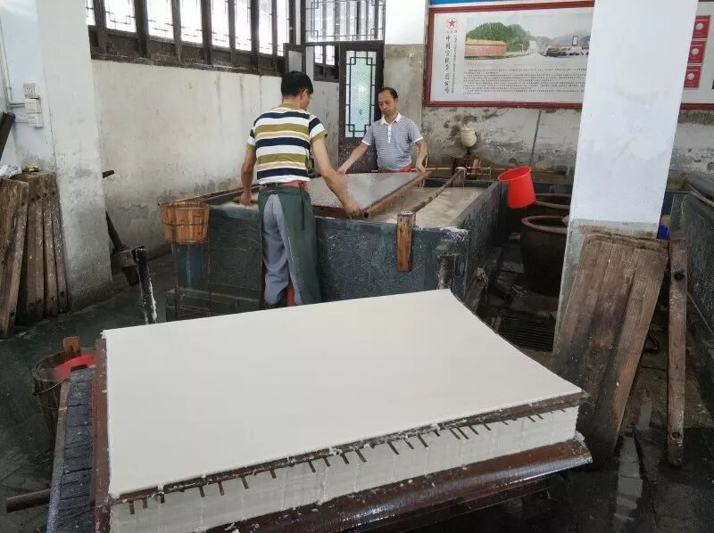
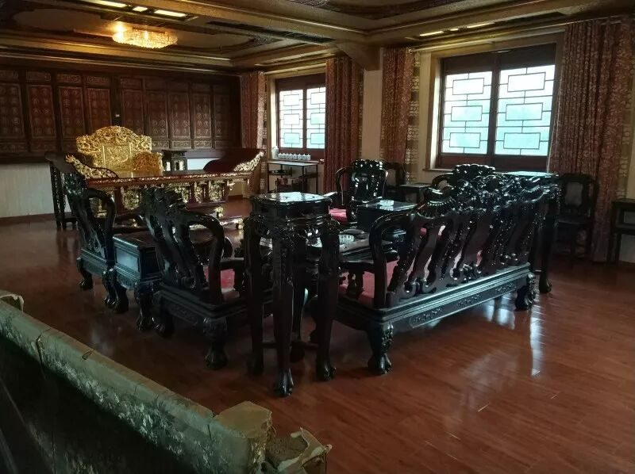

【素笺寄情·九】漫漫非遗路，切切行者情

素|笺|寄|情
作为一个土生土长的安徽人，我过去十八年的时光里走过的安徽地方也没有这短短六天走过的地方多。这些天和其他14个行者一起几不停歇地寻觅非遗的蛛丝马迹，终得些许收获。
【视野的震撼】
走过宣纸文化园，我记不住制作宣纸的那一百零八道工序，但是文化园技艺展里的师傅娴熟的捞纸工艺，生产车间里气势磅礴的三丈三宣纸，二楼博物馆里与字画完美融合地各种色彩的熟宣，大国工匠和无名手艺人对这份非遗同样的热爱与坚守……宏村刚刚从山水长卷里走出来的蓝天白云青山绿水粉墙黛瓦，徽派的典型特色马头墙，恢宏大气的门楼砖雕，精巧细致的窗梁木雕……这些每一个亲眼见到的人都不易忘却。非遗的魅力或许就在于此，你细细去了解他，可能就会为它那摄人心魄的美倾倒。

【知识的拓展】
最近新上线的延禧攻略里许多非遗都有亮相，八月一号的宣纸文化园一游也让我对剧中“是出自安徽泾县的生宣”这句台词有了更深的认同感。对非遗的了解也让我看门楼砖雕不仅沉醉于其细致的雕刻，更惊叹于背后的美满寓意。门前的一对石鼓也不会再让我摸不着头脑，因为我清楚这就是“传说”中的门当户对的门当……了解调查非遗的一路也让我了解到许多新东西。


【思维的改观】
在一个月之前，甚至在踏入宏村之前，我对非遗被商业化这件事都是反感的。在与宏村的原住民讨论对商业化的看法时，她没有表现出我想象中的反感，从与她的谈话里我才意识到商业化是现在非遗不可避免的一点，而宏村能够很好的被保留到现在，修缮维护的资金就是来源于商业化带来的利益。但是拿十年前与现在一比，我们又该担忧商业化的程度了。所以，或许商业化也是非遗保护的一把双刃剑，也必将成为日后非遗继承的一大论题。
我最初走进行者无疆更多是因为它是拾遗皖徽，是一个靠谱的团队，而今，和它挥手暂别，我却更感谢它将非遗和一群热爱它的可爱的人们带进了我的生活。
原来不是因为这东西是非遗所以我们需要保护它，而是因为这东西它这样美妙，所以它需要我们保护，所以它能成为非遗。行者无疆带我走进非遗开启了兴趣之门，我也会将带着对非遗的了解走进身边人的生活，或许这也是另一种非遗的传承。
其二，行者无疆也带我走近非物质文化遗产继承人，砖雕的方新中老师热情接待我们，年纪大了图纸都需要借助放大镜了，但他对砖雕的热爱几十年如一日。制作宣纸的大国工匠坚守自己岗位，左一深右一浅捞好每一张纸。笔庄的杨文先生传承制笔技艺的同时也不忘改革，与时代共同进步……手艺的“shou”，是“手”也是“守”，向这些传承人致敬。
最后，感谢这一路遇见的行者小伙伴。入队之初一场与往期队员的农家乐的聚会让我惊讶这个团队里队员之间的深厚情谊，前期问卷的调查，非遗的普及工作，群里改了三番的行程表让我感知这个团队对调研的认真，而一路的短暂相处又让我感动于大家的谦让温暖，对待自己工作的细致负责，处理问题时的果断魄力。
也因为在这样的氛围里，我希望认真做好无论自己的本职分配工作还大家均摊的工作，也幸运这六天与你们一路相伴。最后，行者无疆一定会越来越好！
图片｜沈华，盛暘
文案｜汤抒雁
排版｜邓子孚
审核｜应雨珊，潘雯雯
长按扫码关注我们